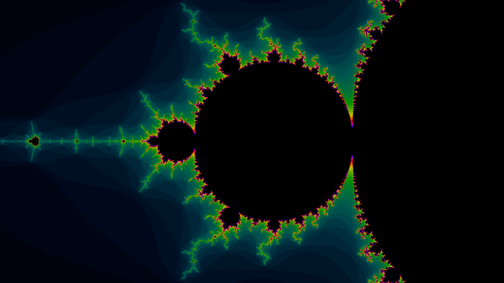
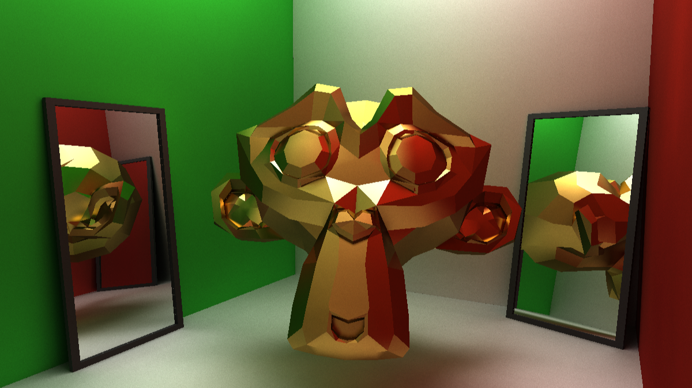
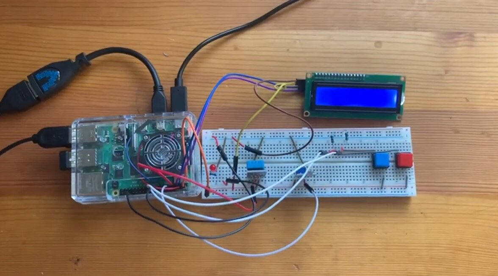

About Me
Hello! My name is Marius Arcay. I am currently a junior at San Jose State University pursuing a Bachelor's degree in Computer Science. I have also earned an Associate's degree in Mathematics from West Valley College, and am in the process of finishing an Associate's degree in Physics.
Languages: C++, C, GLSL, Python, Java, Assembly (ARM)
I primarily enjoy low-level and performance-intensive software development (such as 3D graphics), but I am also proficient in high-level and web development languages.
Outside of software development, I specialize in 3D technical art, environment art, and asset creation. Most recently, I completed contract work for Valve Corporation, contributing to official content for Counter-Strike 2, which helps fund my education at SJSU.
Work Experience
Valve Corporation
3D Artist (Contract)
Oct 2025 - Jan 2026
Remote
Authored Rooftop, an official Counter-Strike 2 multiplayer map using Valve’s proprietary technology, balancing visual fidelity, gameplay requirements, and performance.
Profiled and optimized scene geometry, materials, lighting, and assets to meet performance standards expected of an official Counter-Strike 2 map.
Shipped to a global audience of millions of players.
Target
Retail Tech Consultant
Jun 2021 - Present
Morgan Hill, CA
Provided personalized expertise to help guests select, understand, and purchase electronics.
Projects
CUDA Fractal Renderer (C++)
Built a CUDA-accelerated fractal renderer achieving a 100× GPU speedup over single-threaded CPU benchmarks across Mandelbrot and Julia sets, with CPU/GPU benchmarking, dynamic iteration scaling, and video rendering.

OpenGL PBR Path Tracer (C++)
Built a GPU-accelerated path tracer using OpenGL/GLSL with Monte Carlo sampling and Cook-Torrance GGX PBR, supporting texture-based materials, depth prepass rendering, scene importing, and interactive rendering tools.

3D Graphics Library (C++)
Built a multi-threaded CPU 3D renderer in C++ featuring scene configuration, mesh management, animation, and model conversion for traditional file types.
Environmental Monitoring Device (Capstone Project)
Developed a Raspberry Pi-based device in C to collect, store, and visualize environmental measurements using I2C sensors and a MySQL database.
